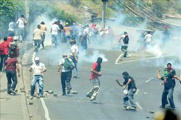

Batalla
 De: La Frikipedia, la enciclopedia extremadamente seria.
De: La Frikipedia, la enciclopedia extremadamente seria.
.jpg/150px-muerto_3(2).jpg)
|
Muerto
El autor de este artículo, al parecer, se ha ido a una de sus citas al WC y suponemos que murió como el desdichado de aquí a la izquierda.
Así que en su memoria, no seas cabrón, ponle más chorradas al artículo.
|
 Ejemplo de pelea limpia en la batalla.
«Scorpion Wins»
~ Comentarista al terminar una riña futbolística.
«¿Qué es batalla?»
~ Ralph Wiggum en un dilema filosófico que ha aterrado a Aristóteles, a Sócrates y hasta a Platón combinados.

Cualquier
gamer a los cinco segundos de iniciar una batalla

Si no puedes con ellos,
suicídate únete.
Una batalla se refiere a la mejor y más pacífica forma de resolver un conflicto entre dos países. Son las porciones en que se dividen guerras y enemistades eternas en MMORPGs. Además de las aberraciones como el lavado de cerebros con pseudo-música, los malos malosos recurren a ellas en sus innumerables intentos por dominar el mundo.
Causas
Las causas son muy variadas. Van desde un ácéntó mál escrito en la Frikipedia hasta la invención de un arma de destrucción masiva o simplemente para robar petróleo y esas chorradas. A la contracausa se la conoce como la leyenda más conocida de todas y se llama diálogo.
También la política tiene que ver con esto (sí, esa ciencia que se usa para saber cómo hablar por hoy.
En qué consiste una batalla
Consiste en el conflicto entre dos o más seres vivos con o sin objetivo. Si lo hay generalmente es hundir al otro a base de hostias, espionaje, bombardeos o canciones a lo Gayber, sin la más mínima consideración. A su vez, hundirlo forma parte de la lista de objetivos siniestros en una cosa llamada guerra.
Tipos de batallas
Hay varios tipos de batallas que suceden en muchos lugares, como en la tierra, mar, aire, en marte, el puticlub, el hotel, el espacio. Pero no importa el lugar siempre habrá un ganador.
- Batalla rápida: es una muy simple tan solo inicias
pierdes ganas y ya esta. No tienes que prepararte ni nada, sólo sufre diviertete.
- Las batallas reales: son esas donde hay muchos muertos, luego, regresan a la vida para vengarse de tu familia y perder la virginidad despues de morir virgenes.
- Batallas virtuales: son esas que se dan en un videojuego y puedes matar y matar y dar hostias como un loco, con la ventaja de que no te lleva la policia y te liberan al día siguiente como si nada.
- 84741145 l33T: 501V 145 QU3 N0 7131V3N 531N711>0 D3 357412 4QU1 31V 3573 41271<U10.
- Batallas japonesas: aqui solo veremos anime y a Inuyasha metiendole su espada por el culo a cualquier gilipollas que lo desafie.
- Batalla de tías: que mejor que ver a un par de tías buenas (o más) dandose de hostias y rasgandose la ropa hasta quedar desnudas
para despues follar.
- Batalla desiciva de CN:tambien conocida como la batalla que nunca ganarás, y será la última en tu vida, porque el rival a desafiar es Chuck Norris o si tienes suerte bruce lee.
Armas inútiles para una batalla
- La espada: muy usada, se usa para rebanarle los cojones a los enemigos.
- El M4A1: la favorita de los soldados gringos, sobre todo los Antiterroristas del Counter Strike.Para usarla sólo la disparas y felicidades, acabas de desperdiciar las balas por ponerte a disparar como loco al suelo o la pared en vez de dispararle a los soldados enemigos Gilipollas!!!.
- Granadas: son unos objetos con forma de
consolador piña que sirven para lanzarlar, luego explotan (cabe mencionar que se te olvidó quitar la hebilla)
- Una piedra: para lanzar en caso de que la M4A1 se quede sin munición.
Autor(es):
- Fordus
- Marcosantinos
- Harry El del Pote
- Equipocrash
- Rexterminator
- Chetos
- Nicoxtremo
- FoxWhite
Frikipedia 2005-2016, Licencia
GFDL 1.2 - Extraído por FrikiLeaks